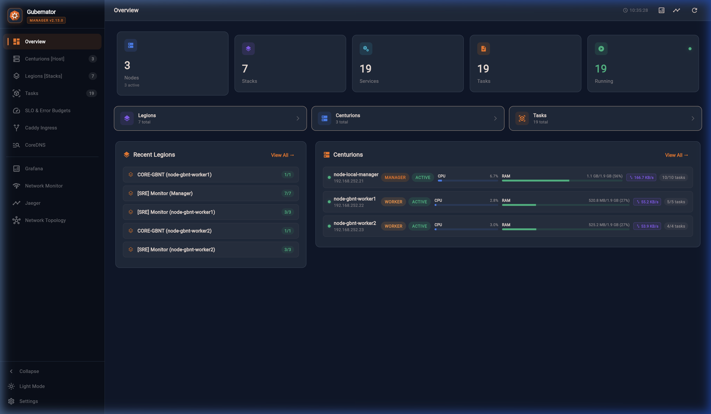

🔒 CIS Docker Benchmark (v1.6.0) Compliance & Hardening Suite
Gubernator provides a native, automated security assessment and remediation engine for the Center for Internet Security (CIS) Docker Benchmark v1.6.0, giving DevOps and Platform Engineering teams actionable, consensus-based hardening guidance across host nodes, Docker daemon configurations, and containerized workloads.
🏛 1. Overview & Purpose
The CIS Docker Benchmark is the global consensus standard for securing container environments running Docker Engine. It defines prescriptive recommendations categorized into two distinct operational profiles:
- Level 1 — Operational Baseline: Practical security controls that can be implemented on production systems with minimal risk of operational disruption.
- Level 2 — Defense-in-Depth: Stricter containment, sandboxing, and security measures designed for high-security environments, defense, finance, and critical infrastructure.
Gubernator automates the discovery, auditing, and remediation tracking of all 6 benchmark sections without requiring third-party agents or external SaaS scanners.
📋 2. Benchmark Sections Evaluated
Gubernator evaluates 35 prescriptive benchmark checks across all 6 core sections:
┌─────────────────────────────────────────────────────────────────────────────┐
│ CIS DOCKER BENCHMARK v1.6.0 AUDIT SECTIONS │
├─────────────────────────────────────────────────────────────────────────────┤
│ SECTION 1: HOST CONFIGURATION │
│ - 1.1.1: Dedicated storage partition for containers (/var/contenedores) │
│ - 1.1.2: Strict daemon access restricted to privileged administrators │
│ - 1.1.3: Continuous auditing of Docker daemon activity (audit logs) │
│ - 1.1.4: Systemd auditing of Docker files and directories (syslog/SIEM) │
├─────────────────────────────────────────────────────────────────────────────┤
│ SECTION 2: DOCKER DAEMON CONFIGURATION │
│ - 2.1: Inter-container network isolation on default bridge (gbnt-net) │
│ - 2.2: Daemon logging level and structured logging drivers (syslog/json) │
│ - 2.3: Kernel sysctl iptables integration (net.bridge.bridge-nf-call-iptables)
│ - 2.4: Restriction of insecure plaintext registries │
│ - 2.5: Modern storage driver enforcement (overlay2) │
│ - 2.6: TLS mutual authentication for remote daemon communication │
│ - 2.7: Live restore enabled for daemon restarts without container downtime │
│ - 2.8: Systemd cgroup driver integration (Level 2) │
├─────────────────────────────────────────────────────────────────────────────┤
│ SECTION 3: DOCKER DAEMON CONFIGURATION FILES │
│ - 3.1: Ownership and restrictive permissions (0644) on docker.service │
│ - 3.2: Ownership and restrictive permissions (0644) on docker.socket │
│ - 3.3: Directory permissions on /etc/docker (0755 root:root) │
│ - 3.4: Socket permissions on /var/run/docker.sock (0660 root:docker) │
│ - 3.5: Restrictive permissions on /etc/docker/daemon.json (0644) │
├─────────────────────────────────────────────────────────────────────────────┤
│ SECTION 4: CONTAINER IMAGES AND BUILD FILES │
│ - 4.1: Explicit non-root user execution context (USER / user: UID:GID) │
│ - 4.2: Admission Gatekeeper enforcement of trusted container registries │
│ - 4.3: Automated vulnerability scanning (CVEs) and CVSS thresholds │
│ - 4.4: Content Trust and Cosign digital cryptographic image signing (L2) │
│ - 4.5: Explicit HEALTHCHECK instructions in Compose service definitions │
│ - 4.6: Avoidance of volatile ':latest' image tags (immutable digests) │
├─────────────────────────────────────────────────────────────────────────────┤
│ SECTION 5: CONTAINER RUNTIME CONFIGURATION │
│ - 5.1: AppArmor / SELinux security profile enforcement │
│ - 5.2: Verification of Linux kernel capabilities (no CAP_SYS_ADMIN) │
│ - 5.3: Strict prohibition of privileged container mode (--privileged) │
│ - 5.4: Host filesystem bind mount protection (sensitive path isolation) │
│ - 5.5: Host network namespace isolation (avoid network_mode: host) │
│ - 5.6: Mandatory container memory limits in Compose deploy configurations │
│ - 5.7: Mandatory container CPU quotas and reservation constraints │
│ - 5.8: Read-only container root filesystems (--read-only) (Level 2) │
│ - 5.9: Host PID namespace isolation (avoid pid: host) │
│ - 5.10: Default Seccomp system call filtering profile active │
├─────────────────────────────────────────────────────────────────────────────┤
│ SECTION 6: DOCKER SECURITY OPERATIONS │
│ - 6.1: Cluster-wide image sprawl auditing and stale image lifecycle │
│ - 6.2: Exited and dead container pruning to avoid container sprawl │
└─────────────────────────────────────────────────────────────────────────────┘
📊 3. Posture Grade & Scoring Calculation
Gubernator computes real-time compliance metrics using scored recommendations:
$$\text{Compliance Score (\%)} = \left( \frac{\text{PASS Count} + 0.5 \times \text{WARN Count}}{\text{Total Scored Checks}} \right) \times 100$$
Posture Grade Scale
A+/A(Score $\ge 85\%$): Hardened baseline. Recommended for production and enterprise compliance.B(Score $70\% - 84\%$): Good operational security with minor configuration gaps.C(Score $50\% - 69\%$): Baseline security present, but key runtime isolation controls are missing.D(Score $< 50\%$): Sub-optimal configuration requiring immediate hardening.
🖥️ 4. Flutter Web UI Dashboard
Located under Security & Directory ➔ Compliance & Regulatory Suite ➔ 🔒 CIS Docker Benchmark v1.6.0:

Key UI Features
- Header Banner: Shows active hardening standard, with "Re-Audit" and "Export Audit Report" buttons.
- 4 Executive KPI Cards:
- POSTURE GRADE: Letter grade badge (
A,B, etc.) with consensus status. - COMPLIANCE SCORE: Overall weighted percentage with progress bar.
- LEVEL 1 BASELINE: Percentage compliance with baseline operational controls.
- LEVEL 2 DEFENSE: Percentage compliance with advanced defense-in-depth controls.
- Interactive Filter Controls:
- Filter by Section:
All (35),1. Host,2. Daemon,3. Files,4. Images,5. Runtime,6. Ops. - Filter by Level:
All,Level 1,Level 2. - Filter by Status:
All,Action Required,PASS. - Interactive Remediation & Audit Modal: Clicking the open-in-new icon on any check displays:
- Full prescriptive recommendation title and section.
- Discovered Technical Evidence: Exact cluster state, detected paths, and container configurations.
- Audit Verification Procedure: Prescriptive command-line steps to manually verify compliance with copy button.
- Actionable Remediation Guidance: Prescriptive instructions and Docker Compose labels with "Copy Fix" button.
- Technical Report Viewer: Exports the complete CommonMark report with "Copy to Clipboard", "Download Markdown (.md)", and "Download JSON (.json)".
💻 5. CLI Parity (gbnt cis)
The gbnt cis command family provides complete terminal access to the CIS Docker Benchmark engine:
Basic Compliance Summary
Output:
=========================================================================================
🔒 CIS DOCKER BENCHMARK v1.6.0 | SECURITY COMPLIANCE AUDIT
=========================================================================================
Posture Grade: A
Compliance Score: 87.5%
Level 1 (Baseline): 87.1%
Level 2 (Defense): 75.0%
Recommendations: 35 (30 PASS, 5 WARN, 0 FAIL, 0 INFO)
-----------------------------------------------------------------------------------------
CHECK LEVEL STATUS TITLE EVIDENCE
-----------------------------------------------------------------------------------------
1.1.1 L1 ✅ PASS Ensure a separate partition... Cluster has 1 dedicated stora...
1.1.2 L1 ✅ PASS Ensure only trusted users a... Cluster RBAC enforces strict ...
...
=========================================================================================
Tip: Run 'gbnt cis --report' to display the full official technical audit report.
Tip: Run 'gbnt cis --level 1' or 'gbnt cis --section 5' to filter specific checks.
Granular Filtering
# Filter by Profile Level
gbnt cis --level 1
gbnt cis --level 2
# Filter by Section
gbnt cis --section 4 # Container Images and Build Files
gbnt cis --section 5 # Container Runtime Configuration
Exporting Reports
# Display full Markdown report in terminal
gbnt cis --report
# Export JSON report
gbnt cis --format json > cis-docker-report.json
📡 6. REST API Endpoints
| Method | Path | Required Role | Description |
|---|---|---|---|
GET |
/v1/security/cis-docker/status |
admin, auditor, operator, readonly |
Returns full evaluation summary and check results in JSON. |
GET |
/v1/security/cis-docker/report |
admin, auditor, operator, readonly |
Generates official audit report (format=markdown or format=json). |
GET |
/api/security/cis-docker/status |
admin, auditor, operator, readonly |
Web server proxy for dashboard integration. |
GET |
/api/security/cis-docker/report |
admin, auditor, operator, readonly |
Web server proxy for downloading audit reports. |
🛡️ 7. Hardening Best Practices with Gubernator
To achieve an A+ (100%) CIS Docker Benchmark posture:
- Non-Root Execution (
4.1): Declareuser: "1000:1000"in all Compose services or specifyUSER appuserin Dockerfiles. - Healthchecks (
4.5): Define explicithealthcheck:sections indocker-compose.yml: - Pin Image Digests (
4.6): Avoid:latesttags; use immutable pinned tags or digests (e.g.redis:7.4-alpine). - Read-Only Root Filesystem (
5.8): Useread_only: truein Compose for stateless services, mounting writable temporary folders astmpfs: /tmp. - Cosign Content Trust (
4.4): Generate an in-cluster signing key withgbnt security key generateand set signature enforcement toenforce.